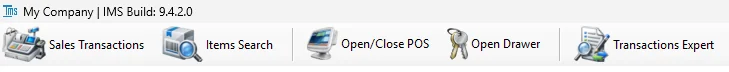

Sales
Sales contains the five direct POS toolbar functions used for sales, returns, item lookup, POS shifts, cash drawer access and transaction administration. IMS 9.4.4 also exposes VAT Base, VAT % and VAT Amount where VAT is enabled.

Sales toolbar
| Button | Purpose |
|---|---|
| Sales Transactions | Open the main POS transaction screen for sales, returns, exchanges, payments, customer/loyalty processing and related transaction workflows. |
| Items Search | Search the IMS item master and retail availability information while working at the POS. |
| Open/Close POS | Open and close POS shifts, select active card machines, record opening/closing cash and permanently close the POS business day. |
| Open Drawer | Open the connected POS cash drawer when the user's policy allows it. |
| Transactions Expert | Review and administer existing sales and Stock Transfer transactions using the transaction-management tools available to the user's policy. |
POS state on the main screen
The toolbar reflects the current POS state. When the POS is closed, the button reads Open POS and Sales Transactions is unavailable. After the POS is opened, the button changes to Close POS and the main screen shows the active POS date and selected bank/card machines.
Current guide
01
Sales TransactionsSales, returns, exchanges, payments, customers, loyalty and the day-to-day POS transaction workflow.
02
Items SearchSearch item details and retail availability while working at the POS.
03
Open/Close POSOpen and close POS shifts, select active card machines, reconcile cash and close the POS business day.
04
Open DrawerOpen the connected cash drawer when the signed-in user has permission.
05
Transactions ExpertReview and administer existing sales and Stock Transfer transactions using authorized transaction-management tools.